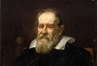
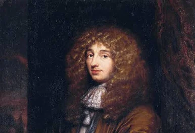
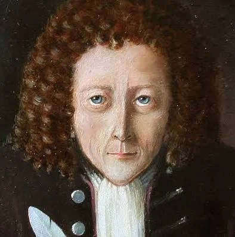
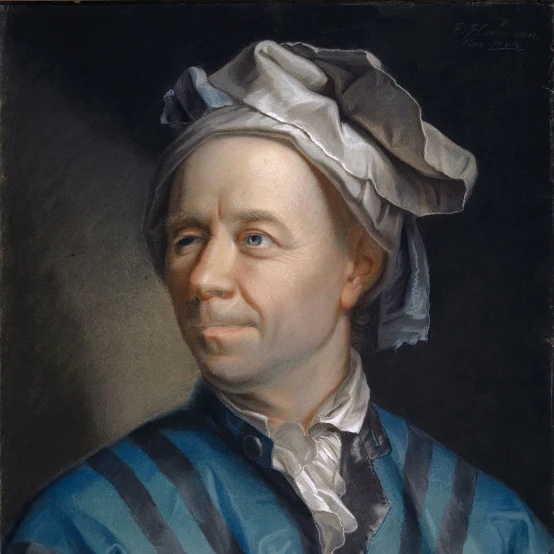
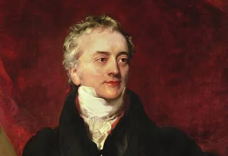
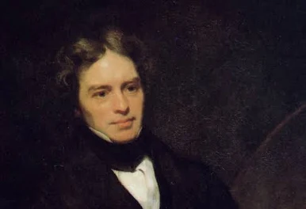
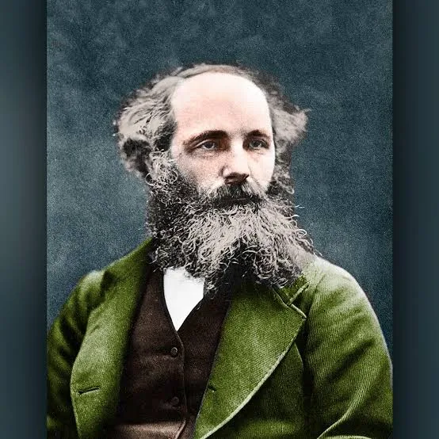
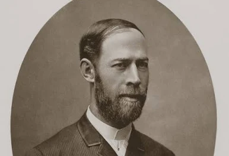

Explore a Física das Ondas
Ondas estão presentes em praticamente tudo ao nosso redor: do som da nossa voz à luz do Sol e ao sinal do seu celular. Compreenda os princípios fundamentais da energia em movimento.
Aprender AgoraO Conceito Fundamental
Na física, uma onda é uma perturbação regular ou pulso que se propaga através do espaço ou de um meio material. O ponto mais importante sobre qualquer onda é: elas transportam energia de um ponto a outro sem transportar matéria.
História e Pioneiros da Ondulatória
A compreensão humana sobre as ondas evoluiu ao longo de séculos, transformando a acústica e a óptica em pilares da física moderna. Graças ao trabalho desses cientistas, hoje temos tecnologias essenciais como rádios, exames de ultrassom, redes Wi-Fi e transmissões por fibra óptica. Conheça a linha do tempo detalhada dos principais nomes que revolucionaram o assunto:
1. Pitágoras de Samos (c. 570–495 a.C.)
Embora mais famoso pela matemática, o filósofo grego foi um dos pioneiros no estudo da acústica. Ele descobriu a relação matemática entre o comprimento das cordas vibrantes e os intervalos musicais harmoniosos, provando que a música e o som obedecem a princípios numéricos e ondulatórios exatos.

2. Galileu Galilei (1564–1642)
Galileu foi um dos primeiros a estudar formalmente a acústica e as ondas sonoras. Ele estabeleceu a relação entre a frequência de uma vibração sonora e o tom do som percebido pelo ouvido humano, demonstrando que o som é produzido por oscilações mecânicas propagadas pelo ar e estudando o comportamento de pêndulos e ressonância.

3. Christiaan Huygens (1629–1695)
Físico e astrônomo holandês que formulou em 1678 o famoso Princípio de Huygens. Ele propôs que a luz se comportava como uma onda (teoria ondulatória da luz), prevendo que cada ponto de uma frente de onda funciona como uma nova fonte de ondas esféricas secundárias. Também desenvolveu a teoria dos relógios de pêndulo, aprofundando o estudo do movimento periódico.

4. Robert Hooke (1635–1703)
Cientista inglês que investigou a elasticidade, as vibrações mecânicas e a natureza da luz. Hooke defendeu que a luz se propaga como vibrações rápidas em um meio e contribuiu para a compreensão do movimento oscilatório e da propagação de pulsos.
5. Isaac Newton (1643–1727)
Embora tenha defendido inicialmente a teoria corpuscular da luz (partículas), Newton calculou formalmente a velocidade do som no ar no seu livro Principia (1687). O modelo matemático inicial dele para a propagação sonora abriu portas para que gerações futuras corrigissem e compreendessem a compressibilidade dos fluidos através de ondas.

6. Leonhard Euler (1707–1783)
Matemático e físico suíço que desenvolveu formulações matemáticas essenciais para o estudo de vibrações, cordas vibrantes e propagação de ondas mecânicas, ajudando a transformar a análise ondulatória em uma linguagem matemática rigorosa.
7. Jean Baptiste Joseph Fourier (1768–1830)
O matemático francês revolucionou a física matemática ao provar que qualquer onda periódica complexa pode ser decomposta em uma soma de ondas senoidais simples (as chamadas Séries de Fourier). Essa ferramenta matemática é fundamental até hoje para a análise de sinais, processamento de áudio, imagens e telecomunicações.

8. Thomas Young (1773–1829)
Em 1801, o físico inglês realizou o célebre Experimento da Fenda Dupla, comprovando definitivamente a natureza ondulatória da luz ao demonstrar os fenômenos de interferência e difração luminosa, desafiando a teoria corpuscular de Isaac Newton e estabelecendo o princípio da superposição de ondas.
9. Augustin-Jean Fresnel (1788–1827)
Engenheiro e físico francês que complementou a teoria de Huygens e Young. Fresnel aplicou cálculos matemáticos rigorosos à difração e à interferência luminosa, além de provar que a luz é uma onda transversal (ao contrário do som, que é longitudinal), o que explicava o fenômeno da polarização da luz.

10. Michael Faraday (1791–1867)
Físico e químico inglês fundamental para o eletromagnetismo. Seus experimentos com indução eletromagnética e sua visão de campos e linhas de força criaram a base conceitual para a unificação das ondas eletromagnéticas.
11. Christian Doppler (1803–1853)
Físico e matemático austríaco que formulou em 1842 o Efeito Doppler, explicando como a frequência percebida de uma onda (sonora ou luminosa) muda quando há movimento relativo entre a fonte e o observador.

12. James Clerk Maxwell (1831–1879)
Físico escocês que unificou a eletricidade, o magnetismo e a óptica através das famosas Equações de Maxwell. Ele previu teoricamente a existência das ondas eletromagnéticas e demonstrou que a própria luz visível nada mais é do que uma onda eletromagnética propagando-se pelo espaço.

13. Heinrich Hertz (1857–1894)
Em 1887, o físico alemão provou experimentalmente no laboratório a existência das ondas eletromagnéticas previstas por Maxwell, gerando e detectando as primeiras ondas de rádio artificiais. Em sua homenagem, a unidade de frequência no Sistema Internacional recebeu o nome de Hertz (Hz).
14. Guglielmo Marconi (1874–1937)
Inventor italiano que transformou as descobertas laboratoriais sobre ondas eletromagnéticas em tecnologia prática. Marconi desenvolveu o primeiro sistema de telegrafia sem fio de longa distância, inaugurando a era das comunicações modernas por rádio e salvando milhares de vidas no mar.
15. Albert Einstein (1879–1955)
Físico teórico que aprofundou a compreensão da luz e das ondas eletromagnéticas ao explicar o efeito fotoelétrico e desenvolver a relatividade, conectando energia, frequência e propagação luminosa.
Vídeo Explicativo em Destaque
acesse o video original no YouTube para mais detalhes. Dois Físicos e um Vetor Assista ao vídeo para reforçar visualmente o aprendizado sobre a cronologia das descobertas em física.